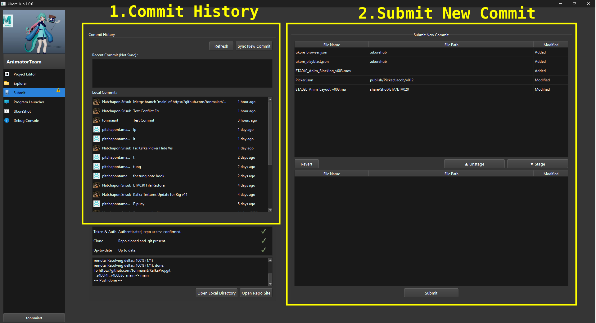

Submit¶

เป็น Tab ที่ใช้จัดการการ Sync ไฟล์งาน และส่งงาน โดยจะมีส่วนประกอบต่างๆดังนี้
1.Commit History¶
เป็นส่วนที่แสดงรายการ Commit ของทุกคน โดยจะแบ่งออกเป็นสองรายการได้แก่
-
Recent Commit (Not Sync) : Commit อันใหม่จากเพื่อนร่วมงานที่ยังไม่ถูก Sync บนเครื่องเรา
-
Local Commit : ประวัติการ Commit ที่อยู่บนเครื่องเรา
หมายเหตุ : หากมี Recent Commit อัพเดทเข้ามาใหม่ ผู้ใช้ต้องกดปุ่ม Sync New commit เพื่อดึงข้อมูลการเปลี่ยนแปลงจาก Recent Commit มายัง Local Commit เพื่อให้ข้อมูลในเครื่องเราเป็นข้อมูลล่าสุดเสมอ
2.Submit New Commit¶
เป็นส่วนที่เอาไว้ใช้ส่งงาน หรือสร้าง Commit ใหม่โดยจะประกอบไปด้วย
- รายการด้านบนจะแสดงไฟล์ต่างๆ ที่เราไปเพิ่ม ลบ หรือแก้ไขไว้
- รายการด้านล่างจะแสดงไฟล์ที่เราเอาใส่ตระกร้า เพื่อที่จะ Submit ไฟล์นั้นให้เป็น Commit ใหม่ ให้คนอื่นต่อไป
โดยเราสามารถเลือกรายการแล้วกดปุ่ม Unstage, Stage เพื่อย้ายรายการที่เลือก จากล่างขึ้นบน หรือบนลงล่างได้ตามใจชอบ จากนั้นให้กด Submit โปรแกรมจะขึ้นให้กรอก Commit Message ให้ระบุข้อความประกอบการส่งงานแล้วกด Submit ได้เลย
หมายเหตุ :
-
หากต้องการคืนค่าไฟล์ให้กลับมาเป็นค่าเดิมทุกประการ เหมือนไม่เคยแก้ไขมาก่อน ให้เลือกรายการในรายการด้านบนแล้วกดปุ่ม Revert (โปรดตรวจสอบให้มั่นใจก่อนกดว่าไฟล์นั้นจะไม่กระทบไฟล์งานของเราจริงๆ)
-
การกด submit จะทำการ sync และส่งงานอัตโนมัติ ดังนั้นผู้ใช้ไม่จำเป็นต้องกด Sync อีกรอบหลังส่งงาน
ข้อควรระวัง¶
- ห้ามแก้ไขงานไฟล์เดียวกัน ควรตกลงกับเพื่อนร่วมทีมให้เรียบร้อยว่าใครจะทำงานไฟล์ไหน
- จากข้อแรก หากต้องส่งต่องานร่วมกัน หรือป้องกันการ Conflict ( การที่ไฟล์นั้นมีคนส่งงานชนกัน ) ให้แก้ด้วยการหมั่น Commit
- งานทุกครั้งหลังแก้ไขงานทันทีเพื่ออัพเดทให้ไฟล์เราเป็นไฟล์ล่าสุดเสมอก่อนมีใครจะหยิบไฟล์เราไปแก้ไขต่อ